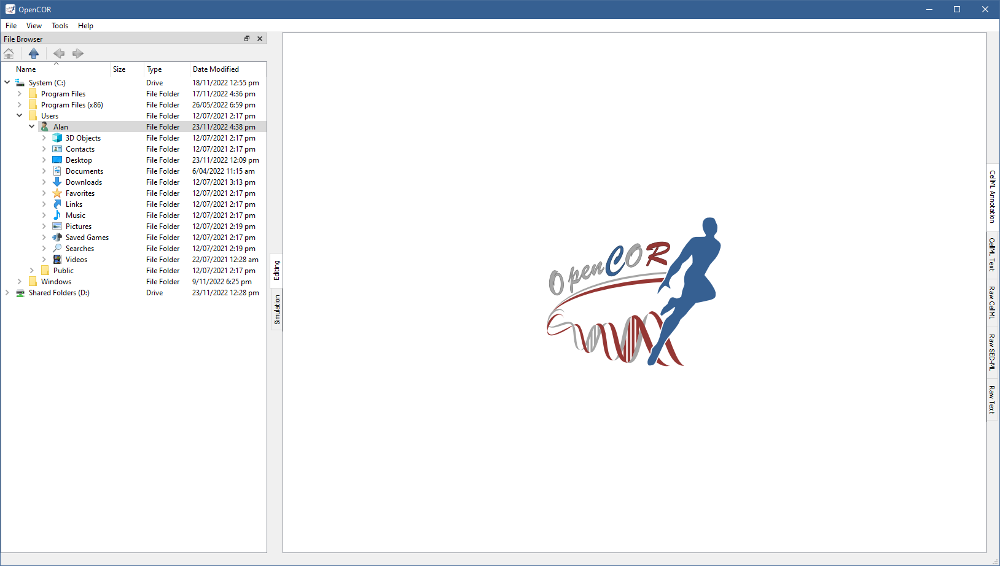

FileBrowserWindow plugin¶
The FileBrowserWindow plugin offers a convenient way to access your (physical) files, remembering the folder or file that was selected when you last ran OpenCOR. By default, your home directory is selected:
To double click on a folder expands its contents, as can be seen by double clicking on the Windows directory:
Similarly, to double click on a file results in that file being opened in OpenCOR. Its rendering depends on its type, if it is recognised, or on the view being currently selected.
Files can also be dragged from the File Browser window onto the File Organiser window.
Tool bar¶
 Go to the home folder
Go to the home folder Go to the parent folder
Go to the parent folder Go to the previous folder or file
Go to the previous folder or file Go to the next folder or file
Go to the next folder or file